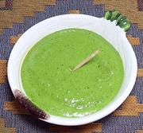

|
Aji Verde Sauce / DipPeru - Aji Verde | ||||
| Makes: Effort: Sched: DoAhead: |
2 cups ** 45 min Yes |
A very popular sauce in Peru, used particularly on grilled meats but on just about anything else too. See also Options. | |||
|
3 2 1/3 2 2 1/2 1 1 1 1/4 |
cl c c c T T t t |
Jalapeños (1) Garlic Queso Cotija (2) Cilantro Scallions Mayonnaise (3) Olive Oil Lime Juice Salt Pepper |
Make - (45 min)
|